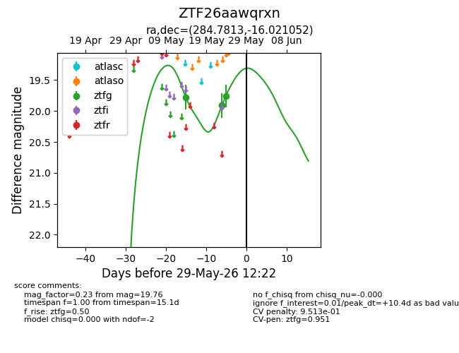
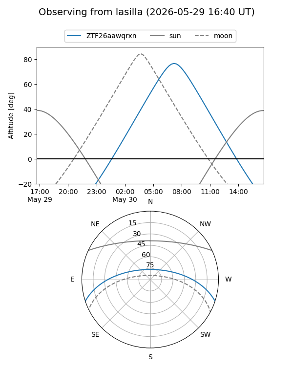
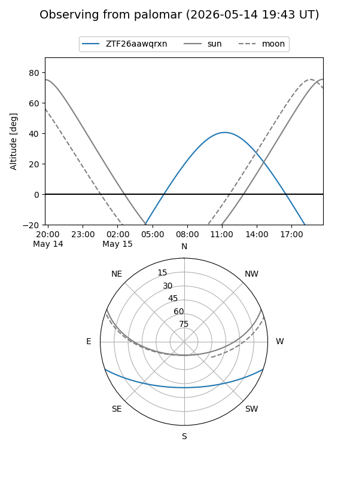
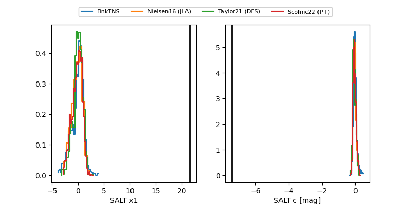

ZTF26aawqrxn
Target ZTF26aawqrxn at 2026-05-29 12:24
Aliases and brokers:
lsst-FINK: link
lsst-Lasair: link
lsst-ALeRCE: link
ztf-FINK: link
ztf-Lasair: link
ztf-ALeRCE: link
alt names
ZTF26aawqrxn (ztf,fink_ztf)
Coordinates:
equatorial (ra, dec) = 284.7813,-16.02105
equatorial (HMS+DMS) = 18:59:07.51,-16:01:15.79
galactic (l, b) = (19.4147,-8.88978)
Flags:
likely cv: !
Photometry:
last ztfg=19.76
3 ztfg detections
Lightcurve

Visibility


Additional plots
